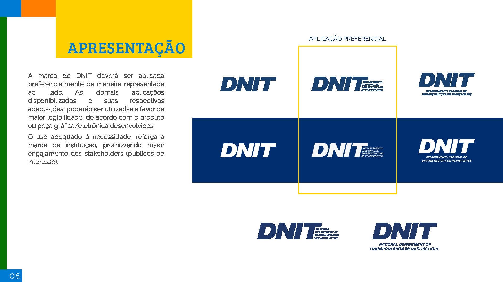
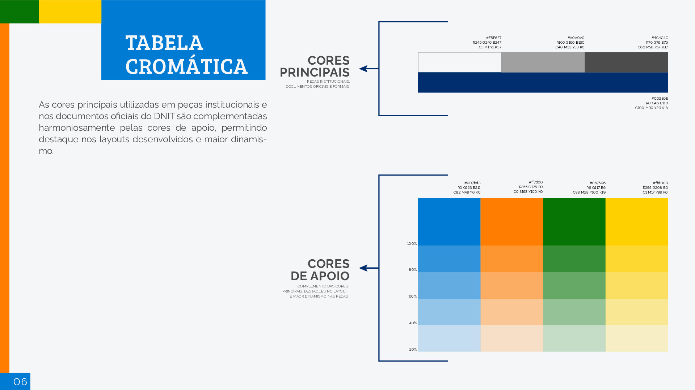
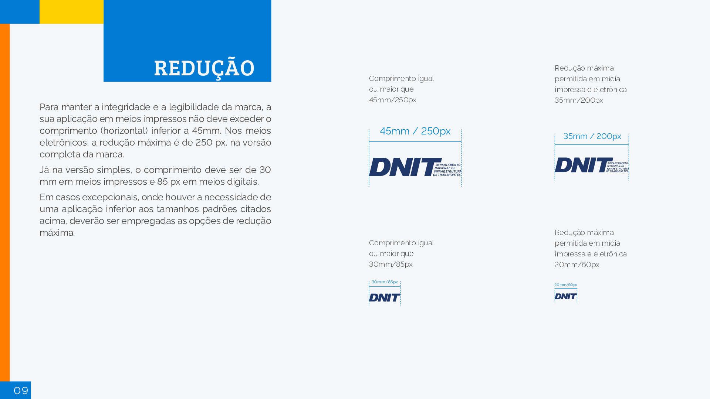

Identidade Visual
1. Introdução
A identidade visual do projeto possui dois focos de atenção. O primeiro é seguir a identidade visual encontrada no Manual de Gestão de Marca do DNIT, que basicamente nos fornece informações sobre como deve ser aplicada a marca do DNIT em diferentes ocasiões, assim como alguns padrões e regras da marca. O segundo ponto de atenção é referente ao cumprimento do Design System para sites do Governo. Sendo assim, iremos detalhar os principais aspectos de cada um desses tópicos para guiar o desenvolvimento e criação dos designs para as plataformas.
2. Manual de Gestão de Marca do DNIT
A seguir serão apresentados os principais pontos do Manual de Gestão de Marca do DNIT, oferecido pela própria equipe do DNIT.
2.1 Conceito
2.2 Ícones

2.3 Apresentação

2.4 Cores

2.5 Elementos gráficos
2.6 Tipografia

2.7 Tamanho da logo

2.8 Usos indevidos

2.9 Caixa de proteção

2.10 Logo em fundos coloridos

2.11 Logo em fundos instáveis

2.12 Assinatura conjunta

3. Padrão Digital de Governo - Design System
Como conversado e validado em reunião com os representates do DNIT, o projeto deve seguir os padrões estabelecidos por esse Design System. As informações presentes neste documento são referentes à versão 3.4.0.
A seguir serão apresentados os padrões minímos de uma aplicação Web Responsiva, mas vale ressaltar que existem inúmeras ferramentas de apoio e consulta na documentação presente na documentação. Por conta disso, é aconselhável que seja utilizado como suporte para validar os designs criados para o projeto.
Dentro do contexto de aplicação Web Responsivo, existem seis pontos de atenção, sendo eles: Cabeçalho, Logo Gov.br, Rodapé, Tipografia, Paleta de Cores e Botões.
3.1 Cabeçalho
Este componente é o principal elemento de uma página, onde podem ser agrupados componentes predefinidos que tem como finalidade auxiliar o usuário no acesso ou mesmo execução das funcionalidades principais site/sistema.
Existem variações de cabeçalho para adaptação. Os outros estilos podem ser visto na documentação
3.2 Rodapé
Geralmente localizado na parte inferior das páginas, o footer (rodapé) pode ser organizado de formas distintas. Normalmente essa organização é definida através da combinação de elementos que reforçam a identidade visual com o conteúdo a ser informado, respeitando os objetivos de negócio e as necessidades do usuário.
Existe uma variação quanto ao tema que também pode ser utilizada, que no caso o background color é branco. Outras variações, detalhes de como manipular as classes e o estilo do componente oferecido pelo próprio governo podem ser vistos na documentação
3.3 Paleta de Cores
A aplicação correta da paleta de cores visa trazer consistência ao Design System e contribuir para garantir uma interface unificada e facilmente reconhecível pelos seus usuários. É fundamental que a paleta esteja alinhada aos Princípios do Design System e seja aplicada corretamente na biblioteca de componentes contribuindo para o equilíbrio entre os diversos produtos e sistemas do governo.

Pela documentação é possível ver detalhadamente quais cores devem ser utilizadas e quais as suas funções específicas, portanto é indicado que seja utilizado como guia essas cores para seguir o padrão mínimo esperado
3.4 Tipografia
A tipografia utilizada no Design System é a 'Rawline' utilizando suas diferentes aplicações de peso, o que garante uma hierarquia entre os diferentes textos. Para saber mais detalhes sobre a utilização da tipografia e suas variações, acesse a documentação
3.5 Iconografia
A coleção de ícones escolhida pelo Design System do governo é a 'Font Awesome' por possuir uma boa variedade de ícones com layout simples, sintético e amigável
3.6 Botões
Os botões são elementos interativos da interface, que permitem que os usuários acessem funcionalidades, executem ações ou naveguem pela interface.


Propriedades adicionais, estados do botão e outros detalhes podem ser vistos na documentação
Referências
EQUIPE DNIT 2023-1. Identidade Visual. Disponível em: https://fga-eps-mds.github.io/2023-1-Dnit-DOC/identidadeVisual/identidadeVisual/#assinatura-conjunta
Versionamento
| Data | Modificação | Autor |
|---|---|---|
| 04/10/2023 | Criação da pagina e adição do manual de identidade visual fornecido pelo DNIT | Vitor Magalhães Lamego |
| 18/10/2023 | Ajustes de formatação | Daniel Porto |